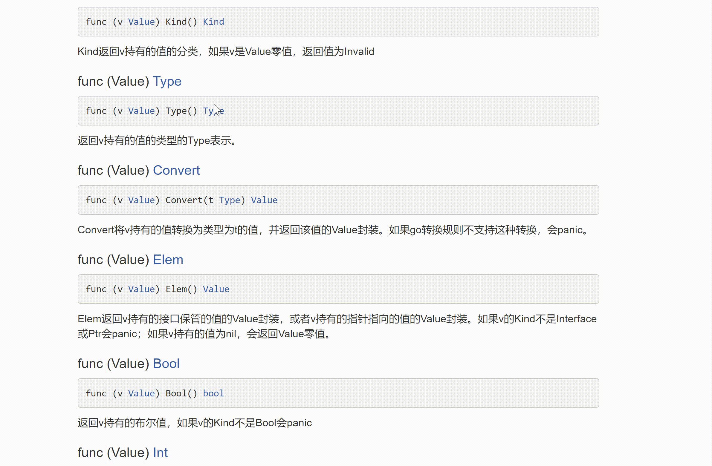
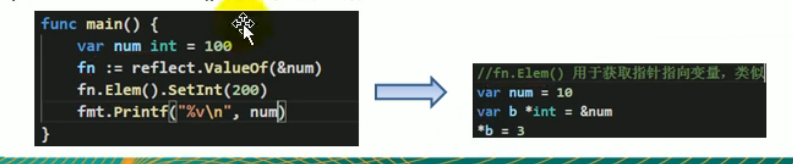

14 反射
应用需求
为什么
基本介绍
（1）反射可以在运行时候动态的获取变量的各种信息，比如变量的类型，类别等。
（2）如果是结构体变量，还可以获取到结构体本身的信息；
（3）通过反射，可以修改变量的值，可以调用关联的方法；
（4）使用反射，需要import reflect。
package main
import(
"reflect"
"fmt"
)
func reflectTest01(b interface{}){
//通过反射获取传入的变量的type,kind,值
//获取Type
rTyp := reflect.Typeof(b)
fmt.Println("rType",rType)
//获取Value
rVal:= reflect.ValueOf(b)
fmt.Printf("rVal=%v rVal type=%T",rVal,rVal)
}
func reflectTest02(b interface{}){
rTyp := reflect.Typeof(b)
fmt.Println("rType",rType)
//获取Value
rVal:= reflect.ValueOf(b)
iV := rVal.Interface() //将 interface{} 通过断言转成需要的类型
fmt.Printf("iv=%v iv type=%T \n",iv,iv)
stu,ok := iV.(student)
if ok {
fmt.Printf("stu.Name = %v\n",stu.Name)
}
}
type Student struct{
Name string
Age int
}
func main(){
var num int = 100
reflectTest01(num)
stu := Student{
Name: "tom",
Age: 20,
}
reflectTest02(stu)
}
反射的注意事项
**reflect.Value.Kind**，获取变量的类别，返回的是一个const常量。

{
kind1 := rVal.Kind()
kind2 := rTyp.Kind()
fmt.Printf("kind =%v kind = %v\n",kind1,kind2)
}
Type是类型，Kind是类别，Type和Kind可能是相同的，也可能是不同的。
比如： **var num = 10** **num**的**Type**是**int**，**Kind**也是**int**
比如：**var stu Student** **stu**的**Types**是**pkg1.Student**，**Kind**是**struct**
- 通过反射可以让变量在
interface{}和Reflect.Value之间相互转换。 - 使用反射的方式来获取变量的值（并返回对应的类型），要求数据类型匹配。
- 通过反射来修改变量，注意当使用
SetXxx方法来设置需要通过对应的指针类型来完成。这样才能改变传入的变量的值，同时需要使用到reflect.Value.Elem()方法。
package main
//通过反射修改
//num int的值
//修改student的值
func reflect01(b interface{}){
rVal :=reflect.ValueOf(b)
rVal.SetInt(20)
}
func main(){
var num iny = 10
reflect01(num)
}
refect.Value.Elem()应该如何理解？
更新: 2022-02-28 01:13:11
原文: https://www.yuque.com/xiaoshan_wgo/codingnotes/vlg4i9